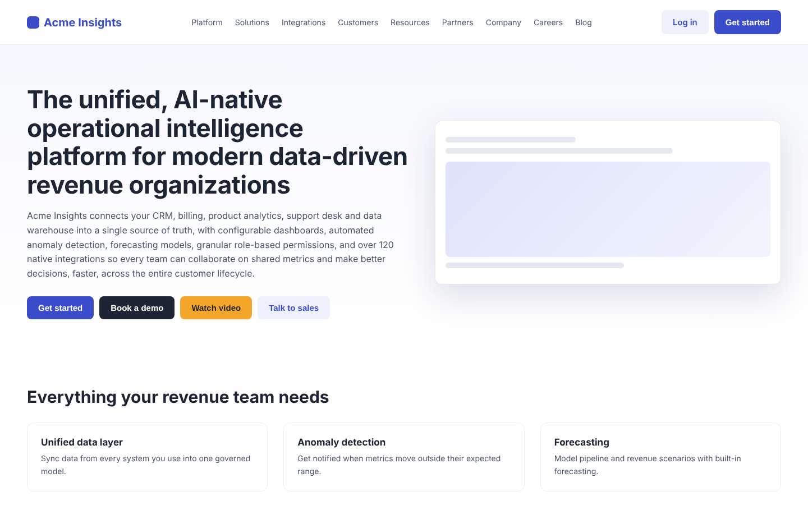
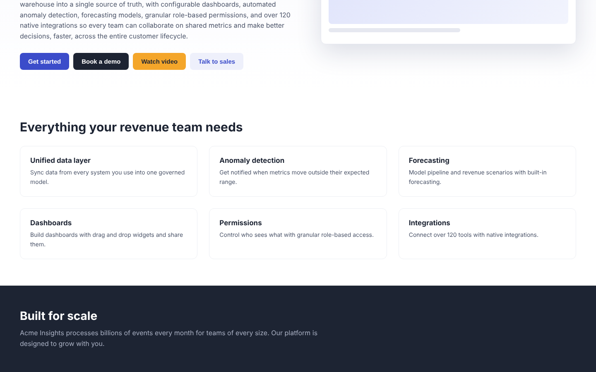
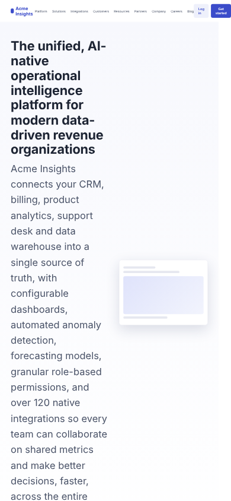

Growth Readiness Report
Acme Insights
https://acme-insights.example · Marketing website · October 18, 2026
Overall audit score
60% UX & UI · 40% AI & search
0/100
Executive UX & UI
Growth readiness of the experience
0/100
AI & search visibility
SEO and GEO readiness
0/100
Executive summary
Against the goal to increase visitor-to-signup conversion, Acme Insights has no critical blockers and 3 high-severity issues. The weakest areas are cognitive load and trust. The most valuable change is to address “headline describes the product, not the outcome”, which can be shipped within days. Findings are prioritized by expected growth impact relative to effort.
Score breakdown
How quickly a target buyer understands what the product does and the outcome it delivers.
How directly a new user reaches first value, and how much effort is required before it.
Clarity and prominence of the primary path to signup, demo or purchase.
Number of competing choices and decisions presented at once.
Whether visual weight matches business priority, and how dense key screens are.
Presence of proof, credibility and security signals at decision points.
Top 3 critical issues
The changes with the largest expected effect on growth.
Headline describes the product, not the outcome
Business impact
Works directly against the goal to increase visitor-to-signup conversion. The headline is typically the single highest-leverage element on the page.
How to fix it
Rewrite the headline to name the result and the audience in under 10 words. Move feature detail into the subheading and test two variants against current conversion.

Competing calls to action dilute the primary path
Business impact
Traffic is split across low-value paths, reducing the share that reaches signup or demo.
How to fix it
Keep one primary button and at most one secondary text link in the hero. Demote the rest to the navigation or lower sections.
No social proof supports the claim
Business impact
Lower trust slows sales cycles and reduces conversion on high-intent traffic; investors read it as weak traction.
How to fix it
Add a logo strip directly under the hero and one quantified customer outcome (metric, name, role, company) near the primary CTA.

AI & search visibility
SEO and GEO: how well search engines and AI answer engines can find, read and cite you.
AI & search health
Reach 80% for strong AI and search visibility
65%
AI and search crawler access
2 blockedFrom your robots.txt.
- AllowedClaudeClaudeBot
- BlockedChatGPTGPTBot
- AllowedChatGPT searchOAI-SearchBot
- AllowedPerplexityPerplexityBot
- AllowedGeminiGoogle-Extended
- BlockedCommon CrawlCCBot
- AllowedGoogle SearchGooglebot
- AllowedBingBingbot
robots.txt
Found
sitemap.xml
Found
llms.txt
Missing
Headline describes the product, not the outcome
Problem
The hero headline “The unified, AI-native operational intelligence platform for modern data-driven revenue o…” does not state a measurable outcome for a specific buyer.
Why it matters
Buyers scan for relevance to their problem. A feature-led or abstract headline forces them to translate it into value themselves, and most will not.
Business impact
Works directly against the goal to increase visitor-to-signup conversion. The headline is typically the single highest-leverage element on the page.
Recommended fix
Rewrite the headline to name the result and the audience in under 10 words. Move feature detail into the subheading and test two variants against current conversion.
Competing calls to action dilute the primary path
Problem
5 different actions compete in the first view (“Log in”, “Get started”, “Book a demo”, “Watch video”). None is clearly dominant.
Why it matters
Choice overload delays decisions. When every action looks equally important, the most valuable one is chosen less often.
Business impact
Traffic is split across low-value paths, reducing the share that reaches signup or demo.
Recommended fix
Keep one primary button and at most one secondary text link in the hero. Demote the rest to the navigation or lower sections.
No social proof supports the claim
Problem
The page shows no customer logos, testimonials or usage numbers. Claims are made without evidence.
Why it matters
For a buyer evaluating an unfamiliar vendor, proof from similar companies is the strongest de-risking signal available.
Business impact
Lower trust slows sales cycles and reduces conversion on high-intent traffic; investors read it as weak traction.
Recommended fix
Add a logo strip directly under the hero and one quantified customer outcome (metric, name, role, company) near the primary CTA.
Navigation carries too many top-level choices
Problem
The header exposes 10 links. Primary paths compete with secondary pages such as “Careers”, “Blog”, “Log in”.
Why it matters
Every additional top-level item increases scanning time and pulls attention away from the conversion path.
Business impact
Visitors drift into low-intent pages; fewer reach pricing or signup.
Recommended fix
Reduce top-level navigation to five items or fewer. Group the rest under one menu and keep the primary CTA visually separate on the right.
First view is text-heavy
Problem
Roughly 103 words compete for attention above the fold. The key message is diluted by supporting copy.
Why it matters
Dense first screens raise cognitive load and slow comprehension, especially on mobile and for skimming executives.
Business impact
Lower message recall and lower engagement with the primary action.
Recommended fix
Limit the hero to a headline, a one-sentence subheading and one action. Move proof and detail into the next section.
Pricing is hidden from the primary journey
Problem
No pricing or plans link is visible in the navigation or the hero.
Why it matters
Self-serve buyers use pricing to qualify themselves. Hiding it pushes them to leave and compare elsewhere.
Business impact
Lower self-serve conversion and more unqualified demo requests.
Recommended fix
Add a Pricing link to the top navigation. If pricing is sales-led, show starting price or plan structure with a clear contact path.
Search and share previews are undefined
Problem
There is no meta description, so search results and link previews show arbitrary page text.
Why it matters
This is often the first impression in search and in shared links.
Business impact
Lower click-through from search and social.
Recommended fix
Write a 150-character description that restates the headline outcome and audience.
Crawled pages (4)
Pages we fetched on acme-insights.example to check indexing, metadata, speed and AI access.
| Page | Status | Indexable | Words | Load | Issues |
|---|---|---|---|---|---|
/index.html Acme Insights | 200 | Yes | 180 | 0.1s | 12 |
/app.html Acme Insights · Home | 200 | Yes | 45 | 0.0s | 10 |
/signup.html Sign up · Acme Insights | 200 | Yes | 25 | 0.0s | 9 |
/pricing.html Error response | 404 | No | 18 | 0.0s | 1 |
Captured screens (5)
Every screen we analyzed for UX and UI, with how many findings were pinned on it.
Home: above the fold
Desktop · 1440×900
Home: section 2
Desktop · 1440×900

Solutions: above the fold
Desktop · 1440×900

Solutions: section 2
Desktop · 1440×900

Mobile: above the fold
Mobile · 390×844
Visual annotations
Every captured screen with its findings pinned in place. Hover or tap a comment to locate it.
Statistics
The numbers behind the scores, across both audit pillars.
Overall audit score
0/100
UX & UI score
0/100
AI & search visibility
0/100
Total issues
0
Issues by severity
UX & UI findings plus AI & search issues
UX & UIAI & search
Where the UX score loses points
Points lost per criterion after weighting. Fix the top rows first.
Impact vs effort
How many findings sit in each cell. Top-left is the best return.
Findings by area
Findings per screen
AI & search checks
32 checks across 4 crawled pages
0
Passed
0
Warnings
0
Errors
3/4
Indexable pages
0/4
With structured data
6/8
AI crawlers allowed
Load time per page
Seconds to load the HTML. Over 2.5s is marked.
Insights
Your next steps and the jobs to get done to raise the score. Check tasks off as you ship them.
Your path to 80+
Today
65
With all tasks done
85
24 tasks across both pillars. Scores are estimates.
8
This week
0
This month
16
Next sprint
Next steps
Step 1
This week
High impact, low effort · 8
- Fix: No broken internal linksSEO · search · low effort+25
- Fix: Served over HTTPSSEO · search · low effort+25
- Fix: AI crawlers allowedGEO · AI answers · low effort+25
- Fix: Structured data (JSON-LD)GEO · AI answers · low effort+25
- Fix: Mobile viewportSEO · search · low effort+25
- Headline describes the product, not the outcomeUX & UI · low effort+13
- +2 more in the jobs below
Step 2
This month
High impact, bigger lift · 0
- Nothing here.
Step 3
Next sprint
Quick wins to batch · 16
- Fix: Meta description presentSEO · search · low effort+12
- Fix: Substantial page contentSEO · search · low effort+12
- Navigation carries too many top-level choicesUX & UI · low effort+8
- First view is text-heavyUX & UI · low effort+8
- Pricing is hidden from the primary journeyUX & UI · low effort+8
- Fix: Open Graph sharing tagsSEO · search · low effort+6
- +10 more in the jobs below
Jobs to be done
Grouped by the outcome each one improves, biggest score gap first.
AI & search · Crawlability & indexing
When search engines visit, every important page can be found, fetched and indexed.
48 → ~100
0/3 done
Fix: No broken internal links
Fix or redirect (301) the broken URLs and update the internal links that point to them.
Fix: Served over HTTPS
Install a TLS certificate, serve every page over HTTPS and 301-redirect HTTP to HTTPS.
Fix: Canonical URLs
Add <link rel="canonical" href="..."> with the page's own absolute URL to every page to consolidate duplicate URLs.
UX & UI · Value proposition clarity
When a buyer lands on the page, they understand within five seconds what changes for them and why it matters.
65 → ~83
0/2 done
Headline describes the product, not the outcome
Rewrite the headline to name the result and the audience in under 10 words. Move feature detail into the subheading and test two variants against current conversion.
Search and share previews are undefined
Write a 150-character description that restates the headline outcome and audience.
UX & UI · Trust signals
When a buyer evaluates the product, they find proof that it works for teams like theirs.
54 → ~72
0/2 done
No social proof supports the claim
Add a logo strip directly under the hero and one quantified customer outcome (metric, name, role, company) near the primary CTA.
Pricing is hidden from the primary journey
Add a Pricing link to the top navigation. If pricing is sales-led, show starting price or plan structure with a clear contact path.
AI & search · AI search access
When someone asks ChatGPT, Claude, Perplexity or Gemini about your category, your pages can be read and cited.
61 → ~100
0/4 done
Fix: AI crawlers allowed
Unless blocking is a deliberate policy, replace the blocking group in robots.txt with an explicit allow for each crawler, e.g. "User-agent: GPTBot / User-agent: CCBot / Allow: / / Disallow: /app/" (keep private app paths disallowed). Re-test with each vendor's robots checker, then watch server logs for the crawlers returning within a few days.
Fix: Question-and-answer content
Add an FAQ section to the home, pricing and product pages with 5-8 real buyer questions as H2/H3 headings ("How long does setup take?", "How is pricing calculated?") and 40-60 word direct answers, and mark it up with FAQPage JSON-LD.
Fix: Citable facts and numbers
Add 3-5 sourced facts per key page: customer count, a quantified customer result ("cut forecast error by 32% at Northwind"), setup time, number of integrations and starting price. Put each in its own short sentence so it can be quoted on its own.
Fix: llms.txt
Publish /llms.txt as Markdown: "# <Product>" on the first line, a "> one-sentence summary of what it is and who it is for", a short paragraph on key facts (category, pricing model, integrations), then "## Product", "## Pricing", "## Docs" and "## Customers" sections, each a list of "- [Page title](absolute URL): one-line description". Keep it under 100 lines and update it with each launch.
UX & UI · Hierarchy and information density
When people scan a screen, the most important thing is the first thing they read.
67 → ~93
0/3 done
Competing calls to action dilute the primary path
Keep one primary button and at most one secondary text link in the hero. Demote the rest to the navigation or lower sections.
Navigation carries too many top-level choices
Reduce top-level navigation to five items or fewer. Group the rest under one menu and keep the primary CTA visually separate on the right.
First view is text-heavy
Limit the hero to a headline, a one-sentence subheading and one action. Move proof and detail into the next section.
AI & search · Structured data
When engines and AI assistants read your pages, they understand what your company and product are.
63 → ~100
0/3 done
Fix: Structured data (JSON-LD)
Add a <script type="application/ld+json"> block to the home page with an @graph of: Organization (name, url, logo, sameAs), WebSite (name, url) and SoftwareApplication (name, applicationCategory "BusinessApplication", operatingSystem "Web", offers with price and priceCurrency, aggregateRating if you have reviews). Validate with Google's Rich Results Test and the Schema.org validator.
Fix: Organization or product schema
Add Organization (name, logo, sameAs social profiles) and WebSite schema site-wide, plus SoftwareApplication or Product schema on product and pricing pages.
Fix: Brand entity defined
Add site-wide Organization JSON-LD with "name", "url", "logo" (absolute URL to a square PNG), "description" and "sameAs" listing LinkedIn, Crunchbase, G2, GitHub and X profile URLs. Use the exact same company name everywhere.
AI & search · Content structure
When a page is read by a person or a model, its headings and copy explain it clearly.
58 → ~100
0/4 done
Fix: Mobile viewport
Add <meta name="viewport" content="width=device-width, initial-scale=1"> to every page.
Fix: Substantial page content
Expand key pages with specific, answer-style copy: who it is for, the problem, how it works, proof and FAQs.
Fix: Language declared
Set <html lang="en"> (or the right language code) on every page.
Fix: Logical heading outline
Structure each page as H1 (page topic), H2 per section phrased as the question or benefit it covers, and H3 for details, without skipping levels. AI systems split pages into passages along these headings.
AI & search · Titles, descriptions & sharing
When your page appears in search or a shared link, its title and description make people click.
80 → ~100
0/3 done
Fix: Meta description present
Add a 70-160 character meta description to each page that states who it is for and the outcome it delivers.
Fix: Open Graph sharing tags
Add og:title, og:description and a 1200x630 og:image to every page (and twitter:card).
Fix: Title length (30-60 characters)
Rewrite titles to 30-60 characters: the page's specific topic or outcome first, then the brand name.
Go further
Turn this report into a growth roadmap.
A senior product strategist from Matan.Design reviews your product end to end, validates these findings against your data, and leads the first changes with your team.
Generated by the heuristic analysis engine from 5 captured screens.